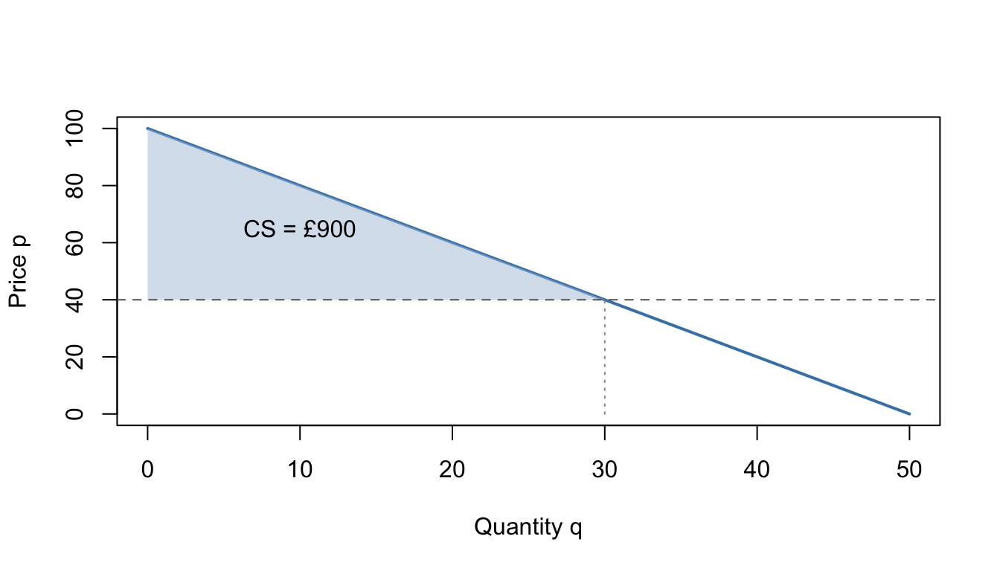
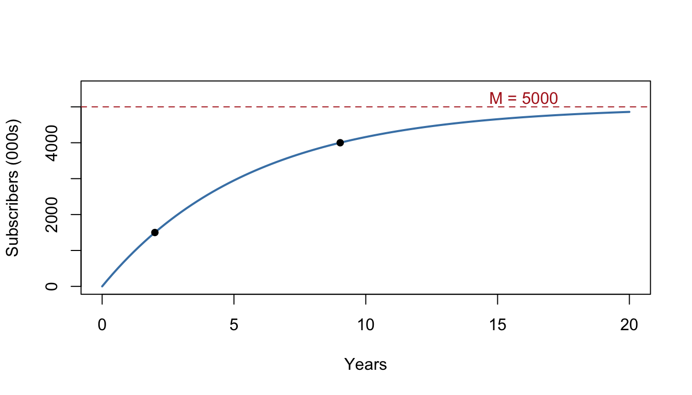

8 Integration
Integration runs differentiation in reverse — and that reversal is astonishingly useful. Chapter 7 turned totals into rates: cost into marginal cost, sales into sales growth. Integration turns rates back into totals: marginal cost back into cost, a sales rate into total units sold, a flow into an accumulated amount. It also computes areas, and — the finale — solves the differential equations you learned to construct in Section 7.12.
Like the last chapter, this one is long and example-heavy: the techniques (substitution, parts, partial fractions) take practice, and the interpretation questions matter as much as the mechanics.
Why this matters: "Total from rate" is half of business analytics: total revenue from a revenue rate, total demand from a demand intensity, accumulated interest from an interest rate. Areas under curves have direct economic meanings — consumer surplus is one you'll compute in this chapter — and separable differential equations give you exponential and saturating growth derived, not assumed. Integration also underpins all of probability (areas under density curves), which dominates your statistics modules.
8.1 Integration as the reverse of differentiation
8.1.1 Key idea
An antiderivative (or indefinite integral) of \(f(x)\) is any function \(F(x)\) whose derivative is \(f(x)\). We write
\[\int f(x)\,dx = F(x) + C,\]
where \(C\) is the constant of integration — needed because constants vanish under differentiation, so infinitely many functions share the same derivative. The Fundamental Theorem of Calculus makes the reversal precise: differentiation and integration undo each other, and (as we'll use in Section 8.3) areas under \(f\) can be computed from any antiderivative \(F\).
The constant \(C\) is not a nuisance — in applications it carries real information, pinned down by an initial condition.
8.1.2 Worked examples
Example (simple). Find \(\displaystyle\int (6x^2 - 4x + 1)\,dx\).
Reverse the power rule term by term (raise the power, divide by the new power):
\[2x^3 - 2x^2 + x + C.\]
Check by differentiating — you should recover exactly \(6x^2 - 4x + 1\). Always check: differentiation is easier than integration, so the check is cheap insurance.
Example (moderate). Given \(\dfrac{dy}{dx} = 6\sqrt{x}\) and \(y = 30\) when \(x = 4\), find \(y\).
Rewrite and integrate: \(\displaystyle\int 6x^{1/2}\,dx = 4x^{3/2} + C\).
Apply the condition: \(30 = 4(4)^{3/2} + C = 32 + C\), so \(C = -2\) and \(y = 4x^{3/2} - 2\).
Example (challenging — recovering total cost from marginal cost). A firm's marginal cost is \(C'(q) = 15 - 1.2q + 0.03q^2\) (the function from Section 7.2), and its fixed costs are £200. Find the total cost function.
Integrate:
\[C(q) = \int (15 - 1.2q + 0.03q^2)\,dq = 15q - 0.6q^2 + 0.01q^3 + C.\]
Fixed costs are the costs at zero output: \(C(0) = 200\), so \(C = 200\) and
\[C(q) = 200 + 15q - 0.6q^2 + 0.01q^3.\]
We have reconstructed Chapter 7's cost function exactly — and discovered something worth framing: the constant of integration is the fixed cost. Abstract constant, concrete meaning.
8.1.3 Practice exercises
- Find \(F(x)\) given \(F'(x) = 8x^3 - 3x^2 + 2\).
- Given \(\dfrac{dy}{dx} = \dfrac{3}{\sqrt{x}}\) and \(y(9) = 20\), find \(y\).
- Marginal revenue is \(R'(q) = 50 - 0.4q\) and \(R(0) = 0\) (no sales, no revenue). Find the revenue function.
Common mistakes:
- Forgetting \(+C\) on indefinite integrals. It costs marks at A-level and meaning in applications (it's the fixed cost, the starting balance, the initial population…).
- Reversing the power rule the wrong way round: integrate \(x^n\) by raising the power to \(n+1\) and dividing by \(n+1\) — not multiplying.
- Not checking by differentiating. Thirty seconds, catches nearly everything.
Self-check: antiderivatives and initial conditions
Q1. \(\displaystyle\int 10x^4\,dx = kx^5 + C\). \(k =\)
Q2. Which of the following equals \(\displaystyle\int (9x^2 - 4x + 3)\,dx\)?
- \(9x^3 - 4x^2 + 3x + C\)
- \(18x - 4\)
- \(3x^3 - 2x^2 + 3x + C\)
- \(3x^3 - 2x^2 + 3x\)
Answer:
Q3. Given \(\dfrac{dy}{dx} = 4x - 5\) and \(y(2) = 1\), find the constant of integration. \(C =\)
Q4. Given \(\dfrac{dy}{dx} = 3\sqrt{x}\) and \(y(4) = 20\): \(C =\) and \(y(1) =\)
Q5. A firm's marginal cost is \(C'(q) = 20 - 0.5q\) and its fixed costs are £150. Find the total cost of producing 10 units, in £: . In the total cost function, the constant of integration represents the .
Q1. \(k = 2\): raise the power to 5, then divide by 5, so \(\tfrac{10}{5} = 2\). Multiplying by the new power gives 50 — the power rule run the wrong way round.
Q2. (C). Integrate term by term: \(3x^3 - 2x^2 + 3x + C\). (B) is the derivative — integration goes the other way. (A) raises each power without dividing by it. (D) is correct but missing \(+C\): incomplete, and in applications the constant carries real meaning.
Q3. \(y = 2x^2 - 5x + C\); then \(y(2) = 8 - 10 + C = 1\), so \(C = 3\).
Q4. \(\displaystyle\int 3x^{1/2}\,dx = 2x^{3/2} + C\); \(y(4) = 2(8) + C = 20\) gives \(C = 4\), so \(y(1) = 2 + 4 = 6\). Quick check: \(\tfrac{d}{dx}\big(2x^{3/2}\big) = 3x^{1/2}\) ✓.
Q5. \(C(q) = 150 + 20q - 0.25q^2\), so \(C(10) = 150 + 200 - 25 = 325\). The condition \(C(0) = 150\) pins the constant of integration: it is the fixed cost — abstract constant, concrete meaning.
8.2 Standard integrals
8.2.1 Key idea
The standard results, each the reverse of a Chapter 7 derivative:
\[\int x^n\,dx = \frac{x^{n+1}}{n+1} + C \;\; (n \ne -1), \qquad \int e^x\,dx = e^x + C, \qquad \int \frac{1}{x}\,dx = \ln|x| + C,\]
together with the structural rules: constants multiply through, sums integrate term by term. Note the exception in the power rule — \(n = -1\) would mean dividing by zero, and that missing case is precisely where \(\ln|x|\) steps in. As in differentiation: rewrite first (surds and reciprocals as powers, quotients simplified), integrate second.
8.2.2 Worked examples
Example (simple). Find \(\displaystyle\int \left(x^4 - 2x + 7\right) dx\).
\[\frac{x^5}{5} - x^2 + 7x + C.\]
Example (moderate). Find \(\displaystyle\int \left(6\sqrt{x} + \frac{3}{x^2}\right) dx\).
Rewrite: \(6x^{1/2} + 3x^{-2}\). Integrate:
\[6 \cdot \frac{x^{3/2}}{3/2} + 3 \cdot \frac{x^{-1}}{-1} + C = 4x^{3/2} - \frac{3}{x} + C.\]
Example (moderate). Find \(\displaystyle\int \frac{2x^3 - 5x}{x}\,dx\).
Simplify first: \(\dfrac{2x^3 - 5x}{x} = 2x^2 - 5\), so the integral is \(\dfrac{2x^3}{3} - 5x + C\). (The simplify-first habit from Chapter 7 pays double here — there is no "quotient rule" for integration to rescue you.)
Example (challenging). Find \(\displaystyle\int \left(3e^x + \frac{2}{x} - \frac{4}{x^3}\right) dx\).
Treat each term with its own rule — and note which is which: \(\tfrac{2}{x}\) is the special \(\ln\) case; \(\tfrac{4}{x^3} = 4x^{-3}\) is an ordinary power:
\[3e^x + 2\ln|x| + \frac{2}{x^2} + C.\]
(Check the last term: \(\tfrac{d}{dx}\big(2x^{-2}\big) = -4x^{-3}\) ✓.)
8.2.3 Practice exercises
- Find \(\displaystyle\int (4x^3 - 6x^2 + 2)\,dx\).
- Find \(\displaystyle\int \left(\frac{6}{\sqrt{x}} - \frac{4}{x^3}\right) dx\).
- Find \(\displaystyle\int \frac{x^3 + 4x}{x^2}\,dx\) (simplify first).
- Find \(\displaystyle\int \left(5e^x - \frac{3}{x}\right) dx\).
Common mistakes:
- Applying the power rule to \(\tfrac{1}{x}\): \(\int x^{-1}dx\) is \(\ln|x| + C\), never \(\tfrac{x^0}{0}\).
- Sign and power slips on negative powers: \(\int x^{-3}dx = \tfrac{x^{-2}}{-2} = -\tfrac{1}{2x^2}\).
- Trying to integrate a product or quotient term by term. \(\int f g \,dx \ne \int f\,dx \int g\,dx\) — products need Sections 8.5–8.6.
Self-check: standard integrals (quick-fire)
Q1. \(\displaystyle\int x^6\,dx = \dfrac{x^7}{n} + C\). \(n =\)
Q2. \(\displaystyle\int 5e^x\,dx = k\,e^x + C\). \(k =\)
Q3. Which equals \(\displaystyle\int \dfrac{2}{x}\,dx\)?
- \(-\dfrac{2}{x^2} + C\)
- \(2\ln|x| + C\)
- \(\dfrac{2x^0}{0} + C\)
- \(\ln|2x| + C\)
Answer:
Q4. Rewrite first: \(\displaystyle\int 9\sqrt{x}\,dx = k\,x^{3/2} + C\). \(k =\)
Q5. Rewrite first: \(\displaystyle\int \dfrac{4}{x^3}\,dx = \dfrac{k}{x^2} + C\). \(k =\)
Q6. Which equals \(\displaystyle\int \dfrac{1}{\sqrt{x}}\,dx\)?
- \(\sqrt{x} + C\)
- \(\ln\sqrt{x} + C\)
- \(-\tfrac{1}{2}x^{-3/2} + C\)
- \(2\sqrt{x} + C\)
Answer:
Q7. Simplify first: \(\displaystyle\int \dfrac{x^3 + 6x}{x}\,dx = \dfrac{x^3}{a} + bx + C\). \(a =\) and \(b =\)
Q8. Which equals \(\displaystyle\int \left(3e^x - \dfrac{2}{x^2}\right) dx\)?
- \(3e^x + \dfrac{2}{x} + C\)
- \(3e^x - \dfrac{2}{x} + C\)
- \(3e^x - 2\ln\big(x^2\big) + C\)
- \(3e^x + \dfrac{2}{3x^3} + C\)
Answer:
Q9. Simplify first: \(\displaystyle\int 2x \cdot x^3\,dx = k\,x^5 + C\). \(k\) (as a decimal) \(=\)
Q10. Which equals \(\displaystyle\int \left(\dfrac{4}{x} + \dfrac{x}{4}\right) dx\)?
- \(4\ln|x| + \dfrac{x^2}{4} + C\)
- \(-\dfrac{4}{x^2} + \dfrac{1}{4} + C\)
- \(4\ln|x| + \dfrac{x^2}{8} + C\)
- \(\ln|4x| + \dfrac{x^2}{8} + C\)
Answer:
Q1. \(n = 7\): raise the power, divide by the new power.
Q2. \(k = 5\): \(e^x\) is its own antiderivative; the constant multiplies through.
Q3. (B). This is the power rule's missing case: (C) is what the blind power rule produces — division by zero — and exactly where \(\ln|x|\) steps in. (A) is the derivative. (D) looks close, but \(\ln|2x| = \ln 2 + \ln|x|\) has derivative \(\tfrac{1}{x}\), not \(\tfrac{2}{x}\): the 2 must multiply the log, not sit inside it.
Q4. \(9x^{1/2}\) integrates to \(9 \cdot \tfrac{x^{3/2}}{3/2} = 6x^{3/2}\): dividing by \(\tfrac32\) means multiplying by \(\tfrac23\).
Q5. \(4x^{-3}\) integrates to \(\tfrac{4x^{-2}}{-2} = -\tfrac{2}{x^2}\), so \(k = -2\). Negative powers are sign-slip territory: check by differentiating.
Q6. (D). \(x^{-1/2}\) integrates to \(\tfrac{x^{1/2}}{1/2} = 2\sqrt{x}\). (C) is the derivative; (B) misreads "reciprocal" as "logarithm" — only \(x^{-1}\) integrates to a log; (A) forgot to divide by \(\tfrac12\).
Q7. Simplify to \(x^2 + 6\) first, giving \(\tfrac{x^3}{3} + 6x + C\): \(a = 3\), \(b = 6\). There is no quotient rule for integration — simplify or nothing.
Q8. (A). The second term is an ordinary power: \(\displaystyle\int -2x^{-2}\,dx = -2 \cdot \tfrac{x^{-1}}{-1} = +\tfrac{2}{x}\). (C) treats \(\tfrac{1}{x^2}\) as the log case — only \(\tfrac1x\) qualifies; (D) moves the power the wrong way; (B) is the sign slip.
Q9. Simplify the product to \(2x^4\) first: \(\tfrac{2x^5}{5}\), so \(k = 0.4\). Never integrate a product factor by factor — \(\int fg\,dx \ne \int f\,dx \int g\,dx\).
Q10. (C). \(\displaystyle\int \tfrac{x}{4}\,dx = \tfrac{x^2}{8}\) — the tempting \(\tfrac{x^2}{4}\) in (A) forgets the extra division by 2. (D)'s \(\ln|4x|\) differentiates to \(\tfrac1x\), not \(\tfrac4x\); (B) is the derivative.
8.3 Definite integrals and area
8.3.1 Key idea
The definite integral evaluates the accumulated change of an antiderivative between limits:
\[\int_a^b f(x)\,dx = \Big[F(x)\Big]_a^b = F(b) - F(a),\]
and equals the area between the curve and the \(x\)-axis from \(a\) to \(b\) — with one crucial caveat: regions below the axis count as negative. For genuine areas, find where the curve crosses the axis and treat each piece separately. The area between two curves is
\[\int_a^b \big(\text{top} - \text{bottom}\big)\,dx,\]
with \(a\) and \(b\) the intersection points (Chapter 3).
No \(+C\) is needed — it cancels in the subtraction.
8.3.2 Worked examples
Example (simple). Evaluate \(\displaystyle\int_1^3 x^2\,dx\).
\[\left[\frac{x^3}{3}\right]_1^3 = 9 - \frac{1}{3} = \frac{26}{3}.\]
Example (moderate — the signed-area trap). Find (a) \(\displaystyle\int_0^3 (x^2 - 4x + 3)\,dx\), and (b) the total area enclosed between the curve and the \(x\)-axis over \([0, 3]\).
\(\left[\dfrac{x^3}{3} - 2x^2 + 3x\right]_0^3 = 9 - 18 + 9 = 0.\)
Zero area? Of course not. The curve crosses the axis at \(x = 1\) and \(x = 3\) (factorise: \((x-1)(x-3)\)), dipping below between them. Piece by piece:
\[\int_0^1 = \frac{4}{3} \quad (\text{above the axis}), \qquad \int_1^3 = -\frac{4}{3} \quad (\text{below}).\]
The signed contributions cancel — that's the zero in (a). The actual area is \(\tfrac{4}{3} + \left|-\tfrac{4}{3}\right| = \tfrac{8}{3}\). Moral: for areas, always sketch and split at the roots.
Example (moderate — area between curves). Find the area enclosed by \(y = x^2\) and \(y = x + 2\).
Intersections: \(x^2 = x + 2 \Rightarrow (x-2)(x+1) = 0\), so \(x = -1, 2\). The line is on top between them:
\[\int_{-1}^{2} \big(x + 2 - x^2\big)\,dx = \left[\frac{x^2}{2} + 2x - \frac{x^3}{3}\right]_{-1}^{2} = \frac{10}{3} - \left(-\frac{7}{6}\right) = \frac{9}{2}.\]
Example (challenging — consumer surplus). A market has demand curve \(p = 100 - 2q\) (the price at which quantity \(q\) can be sold) and the market price settles at \(p = 40\). Consumer surplus is the total amount consumers would have been willing to pay above what they actually paid — the area between the demand curve and the price line. Compute it.
At \(p = 40\), the quantity sold is \(q^* = 30\). Surplus:
\[\text{CS} = \int_0^{30} (100 - 2q)\,dq - 40 \times 30 = \Big[100q - q^2\Big]_0^{30} - 1200 = (3000 - 900) - 1200 = 900.\]
Consumers collectively gain £900 of value beyond their spending. This is a definite integral wearing an economics badge, and it appears — along with its twin, producer surplus — in every microeconomics course. Welfare analysis of taxes, price caps and monopolies is done by comparing exactly these areas.

Figure 8.1: Consumer surplus: the shaded triangle between the demand curve and the market price.
8.3.3 Practice exercises
- Evaluate \(\displaystyle\int_0^2 (3x^2 + 1)\,dx\).
- Find the area enclosed by \(y = x^2\) and the horizontal line \(y = 4\).
- Demand is \(p = 80 - q\) and the market price is £50. Find the consumer surplus.
- Evaluate \(\displaystyle\int_1^4 \left(\sqrt{x} - \frac{1}{x}\right) dx\), leaving your answer exact.
Common mistakes:
- Integrating across a sign change and calling the result an "area". Sketch, find the roots, split.
- Subtracting the limits the wrong way: it's \(F(b) - F(a)\), top limit first.
- In between-curves problems, choosing "top minus bottom" by guesswork — check with a test value or a sketch, or your area will come out negative.
8.4 Integration as accumulation
8.4.1 Key idea
The deepest way to see a definite integral: chop \([a, b]\) into slivers of width \(\Delta x\), approximate the quantity in each sliver by \(f(x)\,\Delta x\), add up, and let the slivers shrink. The integral is the limit of these sums — which is why the symbol \(\int\) is a stretched S, for sum.
The practical payoff: if \(f(t)\) is a rate, \(\displaystyle\int_a^b f(t)\,dt\) is the total accumulated between \(t = a\) and \(t = b\). Units multiply: a rate in £/month integrated over months gives £; litres/minute over minutes gives litres.
\[\text{total change in } F \text{ from } a \text{ to } b = \int_a^b F'(t)\,dt.\]
8.4.2 Worked examples
Example (simple). A machine draws power at the rate \(r(t) = 5 + 2t\) kW, \(t\) hours after switch-on. How much energy does it use in the first 4 hours?
\[\int_0^4 (5 + 2t)\,dt = \Big[5t + t^2\Big]_0^4 = 20 + 16 = 36 \text{ kWh}.\]
Example (moderate — total sales from a decaying sales rate). After a rival launches, a product sells at the rate \(s(t) = 200\,e^{-0.1t}\) units per month. How many units are sold in the first year — and how does that compare with the naive estimate "200 a month for 12 months"?
\[\int_0^{12} 200\,e^{-0.1t}\,dt = \Big[-2000\,e^{-0.1t}\Big]_0^{12} = 2000\big(1 - e^{-1.2}\big) \approx 1398 \text{ units}.\]
The naive estimate of 2{,}400 ignores the decay and overshoots by 70%. Integrating the rate is how you total a changing flow correctly.
Example (challenging — cumulative profit with losses and gains). A project's profit rate is \(P'(t) = -t^2 + 8t - 12\) (£k per month) over its 8-month life. Analyse the project.
Factorise: \(P'(t) = -(t-2)(t-6)\): the project loses money for \(t < 2\) (start-up phase), makes money for \(2 < t < 6\), then loses again as the market fades. Accumulations:
\[\int_0^2 P'\,dt = -\tfrac{32}{3}, \qquad \int_2^6 P'\,dt = +\tfrac{32}{3}, \qquad \int_6^8 P'\,dt = -\tfrac{32}{3}.\]
The profitable middle exactly repays the start-up losses — and then the final two months throw it away: overall, \(\int_0^8 P'\,dt = -\tfrac{32}{3} \approx -£10.7\)k. Managerial reading: stop the project at \(t = 6\), when the profit rate turns negative, and the project breaks even instead of losing £10.7k. The optimal stopping time is where the rate changes sign — a derivative fact — and the consequences are measured by integrals. The two halves of calculus, working one problem together.
8.4.3 Practice exercises
- Water flows into a tank at \(r(t) = 4 + t\) litres per minute. How much water enters in the first 6 minutes?
- Sales run at \(s(t) = 300\,e^{-0.2t}\) units per month. Find total sales over the first 10 months, to the nearest unit.
- A firm's spending rate is \(c(t)\), measured in £ per month, with \(t\) in months. In one sentence, interpret \(\displaystyle\int_0^{12} c(t)\,dt\) — including its units.
Common mistakes:
- Confusing the rate at a moment with the total over a period: \(s(12)\) is the sales rate in month 12; \(\int_0^{12} s\,dt\) is total sales so far. Different objects, different units.
- Multiplying a changing rate by the whole time interval (the "naive 2,400" above). That only works when the rate is constant.
- Dropping units. If the units of your answer don't come out right, the model or the calculation is wrong.
Why this matters: Accumulation thinking runs through operations (total throughput from a production rate), finance (accumulated interest and discounted cash flows), and — most importantly for your degree — probability: probabilities are areas under density curves, and expected values are integrals. When your statistics lecturer writes \(\int x f(x)\,dx\), this section is what it means.
8.5 Integration by substitution
8.5.1 Key idea
Substitution is the chain rule in reverse. If the integrand contains a "lump" \(u = g(x)\) and (up to a constant) its derivative \(g'(x)\) as a factor, substitute:
\[u = g(x), \qquad du = g'(x)\,dx,\]
rewrite everything in terms of \(u\), integrate, and substitute back. Two special cases worth automating:
- Linear insides: \(\displaystyle\int (ax+b)^n dx = \frac{(ax+b)^{n+1}}{a(n+1)} + C\) and \(\displaystyle\int e^{ax+b}\,dx = \frac{e^{ax+b}}{a} + C\) — "integrate the outside, divide by the inside's derivative".
- Definite integrals: change the limits into \(u\)-values and never return to \(x\) at all.
8.5.2 Worked examples
Example (simple). Find \(\displaystyle\int (3x + 2)^4\,dx\).
Linear inside: \(\dfrac{(3x+2)^5}{5 \times 3} + C = \dfrac{(3x+2)^5}{15} + C\).
Example (simple). Find \(\displaystyle\int e^{-0.2t}\,dt\).
\[\frac{e^{-0.2t}}{-0.2} + C = -5\,e^{-0.2t} + C.\]
(The workhorse of every decaying-rate total, as in Section 8.4.)
Example (moderate). Find \(\displaystyle\int 2x\,(x^2 + 1)^5\,dx\).
Spot the pattern: the lump is \(x^2 + 1\) and its derivative \(2x\) is sitting right there. Let \(u = x^2 + 1\), \(du = 2x\,dx\):
\[\int u^5\,du = \frac{u^6}{6} + C = \frac{(x^2+1)^6}{6} + C.\]
Example (moderate). Find \(\displaystyle\int x\,e^{x^2}\,dx\) and \(\displaystyle\int \frac{\ln x}{x}\,dx\).
First: \(u = x^2\), \(du = 2x\,dx\), so \(x\,dx = \tfrac12 du\): the integral is \(\tfrac{1}{2}e^{x^2} + C\).
Second: \(u = \ln x\), \(du = \tfrac{1}{x}dx\): the integral is \(\displaystyle\int u\,du = \frac{(\ln x)^2}{2} + C\).
In both, the give-away was a factor that is the derivative of the lump (\(x\) vs \(x^2\); \(\tfrac1x\) vs \(\ln x\)). Train your eye to hunt for that pairing.
Example (challenging — a definite integral with changed limits). Evaluate \(\displaystyle\int_0^2 x\sqrt{x^2 + 1}\,dx\).
Let \(u = x^2 + 1\), \(du = 2x\,dx\). Change the limits: \(x = 0 \Rightarrow u = 1\); \(x = 2 \Rightarrow u = 5\):
\[\int_0^2 x\sqrt{x^2+1}\,dx = \frac{1}{2}\int_1^5 u^{1/2}\,du = \frac{1}{2}\left[\frac{2u^{3/2}}{3}\right]_1^5 = \frac{1}{3}\big(5\sqrt{5} - 1\big) \approx 3.39.\]
With the limits converted, there's no need to substitute back — cleaner and less error-prone.
8.5.3 Practice exercises
- Find \(\displaystyle\int (2x - 7)^5\,dx\).
- Find \(\displaystyle\int 6x\,(x^2 + 4)^2\,dx\).
- Find \(\displaystyle\int x\,e^{-x^2}\,dx\).
- Evaluate \(\displaystyle\int_0^1 x\,(x^2 + 3)^3\,dx\).
Common mistakes:
- Forgetting to transform \(dx\): \(du = g'(x)\,dx\) is part of the substitution, not decoration. If a stray \(x\) survives into the \(u\)-integral, something's gone wrong.
- In definite integrals, substituting \(u\) but keeping the old \(x\)-limits — the single most common substitution error. Change the limits or change back to \(x\); never mix.
- Using the linear-inside shortcut on non-linear insides: \(\int (x^2+1)^5 dx \ne \tfrac{(x^2+1)^6}{6 \cdot 2x}\) — you cannot "divide by the derivative" when the derivative isn't constant.
View the full playlist on YouTube
Self-check: substitution
Q1. Linear inside: \(\displaystyle\int (2x+5)^7\,dx = \dfrac{(2x+5)^8}{n} + C\). \(n =\)
Q2. Linear inside: \(\displaystyle\int e^{-0.4t}\,dt = k\,e^{-0.4t} + C\). \(k =\)
Q3. Which equals \(\displaystyle\int x\,(x^2+3)^4\,dx\)?
- \(\dfrac{(x^2+3)^5}{5} + C\)
- \(\dfrac{(x^2+3)^5}{10} + C\)
- \(\dfrac{(x^2+3)^5}{10x} + C\)
- \(\dfrac{x\,(x^2+3)^5}{10} + C\)
Answer:
Q4. Which equals \(\displaystyle\int \dfrac{(\ln x)^3}{x}\,dx\)?
- \(\dfrac{(\ln x)^4}{4} + C\)
- \(\dfrac{(\ln x)^4}{4x} + C\)
- \(\dfrac{1}{4}\ln\big(x^4\big) + C\)
- \(\dfrac{3(\ln x)^2}{x} + C\)
Answer:
Q5. For \(\displaystyle\int_0^1 2x\,(x^2+1)^3\,dx\) with \(u = x^2 + 1\): the new \(u\)-limits are , and the value of the integral is
Q1. \(n = a(n_{\text{new}}) = 2 \times 8 = 16\): integrate the outside, then divide by the inside's derivative. Dividing by 8 alone forgets that inner 2.
Q2. \(k = \dfrac{1}{-0.4} = -2.5\) — the workhorse of every decaying-rate total.
Q3. (B). With \(u = x^2+3\), \(du = 2x\,dx\), so \(x\,dx = \tfrac12\,du\) and the integral is \(\tfrac12 \cdot \tfrac{u^5}{5} = \tfrac{u^5}{10}\). (C) is the illegal "divide by the derivative" shortcut — only constant derivatives can be divided out; (A) drops the \(\tfrac12\); (D) leaves a stray \(x\) behind, a sign the substitution wasn't completed. Verify (B): \(\tfrac{d}{dx}\tfrac{(x^2+3)^5}{10} = \tfrac{5(x^2+3)^4 \cdot 2x}{10} = x(x^2+3)^4\) ✓.
Q4. (A). The give-away pairing: the lump is \(\ln x\) and its derivative \(\tfrac1x\) is sitting there as a factor. So \(\displaystyle\int u^3\,du = \tfrac{u^4}{4}\). (D) is the derivative of \((\ln x)^3\); (C) is a log-law muddle — \(\tfrac14\ln(x^4) = \ln x\), nothing like \(\tfrac{(\ln x)^4}{4}\).
Q5. Limits 1 and 2: \(u(0) = 1\), \(u(1) = 2\) — keeping the old \(x\)-limits is the single most common substitution error. Then \(\displaystyle\int_1^2 u^3\,du = \left[\tfrac{u^4}{4}\right]_1^2 = \tfrac{16-1}{4} = 3.75\), with no need to return to \(x\) at all.
8.6 Integration by parts
8.6.1 Key idea
Integration by parts is the product rule in reverse:
\[\int u\,\frac{dv}{dx}\,dx = uv - \int v\,\frac{du}{dx}\,dx.\]
Use it for products where substitution fails — classically \(x\,e^{kx}\) and \(x\ln x\). Choose \(u\) to be the factor that gets simpler when differentiated (usually the polynomial; for \(\ln x\) integrals, choose \(u = \ln x\) since it differentiates to the tame \(\tfrac1x\)). The remaining factor is \(\tfrac{dv}{dx}\), which you must be able to integrate.
8.6.2 Worked examples
Example (simple). Find \(\displaystyle\int x\,e^x\,dx\).
Take \(u = x\) (differentiates to 1 — simpler) and \(\tfrac{dv}{dx} = e^x\) (so \(v = e^x\)):
\[\int x e^x\,dx = x e^x - \int e^x\,dx = x e^x - e^x + C = e^x(x - 1) + C.\]
Example (moderate). Find \(\displaystyle\int x\,e^{-2x}\,dx\).
\(u = x\), \(\tfrac{dv}{dx} = e^{-2x}\), so \(v = -\tfrac{1}{2}e^{-2x}\):
\[\int x e^{-2x}\,dx = -\frac{x}{2}e^{-2x} + \frac{1}{2}\int e^{-2x}\,dx = -\frac{x}{2}e^{-2x} - \frac{1}{4}e^{-2x} + C = -\frac{e^{-2x}(2x+1)}{4} + C.\]
(Watch the signs — this integral is a sign-error factory. Differentiate your answer to check.)
Example (moderate — the famous trick). Find \(\displaystyle\int \ln x\,dx\).
It doesn't look like a product — make it one: \(u = \ln x\), \(\tfrac{dv}{dx} = 1\) (so \(v = x\)):
\[\int \ln x\,dx = x\ln x - \int x \cdot \frac{1}{x}\,dx = x\ln x - x + C.\]
Example (challenging — totalling a sales pulse). A promotional campaign produces sales at the rate \(s(t) = 50\,t\,e^{-0.5t}\) units per week (a rapid rise, then a long fade — the shape you differentiated in Section 7.4). Find the total sales over the first 4 weeks.
We need \(\displaystyle 50\int_0^4 t\,e^{-0.5t}\,dt\). By parts with \(u = t\), \(v = -2e^{-0.5t}\):
\[\int t\,e^{-0.5t}\,dt = -2t\,e^{-0.5t} + 2\int e^{-0.5t}\,dt = -2t\,e^{-0.5t} - 4e^{-0.5t}.\]
Evaluate from 0 to 4:
\[\Big[-2t e^{-0.5t} - 4e^{-0.5t}\Big]_0^4 = \big(-8e^{-2} - 4e^{-2}\big) - (-4) = 4 - 12e^{-2} \approx 2.376.\]
Total sales \(\approx 50 \times 2.376 \approx 119\) units. (Rise-and-fade response curves like \(t\,e^{-kt}\) are standard in advertising models, and by parts is how you total them.)
8.6.3 Practice exercises
- Find \(\displaystyle\int x\,e^{3x}\,dx\).
- Find \(\displaystyle\int x\ln x\,dx\).
- Evaluate \(\displaystyle\int_0^1 x\,e^{-x}\,dx\), exactly and to 3 d.p.
Common mistakes:
- Choosing \(u\) and \(dv\) the wrong way round, which makes the new integral harder: if \(\int v\,\tfrac{du}{dx}\,dx\) looks worse than what you started with, swap and restart.
- Sign errors with negative exponentials — the minus signs multiply up. Check by differentiating.
- Forgetting that \(v\) must come from integrating \(\tfrac{dv}{dx}\): with \(\tfrac{dv}{dx} = e^{-2x}\), \(v = -\tfrac12 e^{-2x}\), not \(e^{-2x}\).
View the full playlist on YouTube
Self-check: integration by parts (and one impostor)
Q1. Which equals \(\displaystyle\int x\,e^{2x}\,dx\)?
- \(\dfrac{e^{2x}(2x+1)}{4} + C\)
- \(x\,e^{2x} - \tfrac{1}{2}e^{2x} + C\)
- \(\dfrac{e^{2x}(2x-1)}{4} + C\)
- \(\dfrac{x^2 e^{2x}}{4} + C\)
Answer:
Q2. One integral in this quiz is an impostor. For \(\displaystyle\int x\,e^{x^2}\,dx\) the right technique is , and \(\displaystyle\int x\,e^{x^2}\,dx = k\,e^{x^2} + C\) with \(k =\)
Q3. Which equals \(\displaystyle\int x\ln x\,dx\)?
- \(\dfrac{x^2\ln x}{2} + \dfrac{x^2}{4} + C\)
- \(\dfrac{x^2\ln x}{2} - \dfrac{x^2}{2} + C\)
- \(x\ln x - x + C\)
- \(\dfrac{x^2\ln x}{2} - \dfrac{x^2}{4} + C\)
Answer:
Q4. The famous trick: \(\displaystyle\int \ln x\,dx = x\ln x + a\,x + C\). \(a =\)
Q5. A campaign generates sales at the rate \(s(t) = 40\,t\,e^{-t}\) units per week. Total sales over the first 2 weeks, to 1 d.p.: units.
Q1. (C). Take \(u = x\), \(\tfrac{dv}{dx} = e^{2x}\) so \(v = \tfrac12 e^{2x}\): \(\tfrac{x e^{2x}}{2} - \tfrac12\displaystyle\int e^{2x}\,dx = \tfrac{xe^{2x}}{2} - \tfrac{e^{2x}}{4} = \tfrac{e^{2x}(2x-1)}{4}\). (B) used \(v = e^{2x}\) — but \(v\) must come from integrating \(\tfrac{dv}{dx}\); (A) is the sign slip; (D) integrates the product factor by factor, which is never legal. Verify (C): differentiating gives \(\tfrac{2e^{2x}(2x-1) + 2e^{2x}}{4} = xe^{2x}\) ✓.
Q2. Substitution — the factor \(x\) is (up to the constant 2) the derivative of the lump \(x^2\), the tell-tale pairing. Then \(k = \tfrac12\). Trying parts here just sends the integral round in circles; always scan for the lump-and-derivative pattern before reaching for parts.
Q3. (D). Take \(u = \ln x\) (it differentiates to the tame \(\tfrac1x\)), \(\tfrac{dv}{dx} = x\): \(\tfrac{x^2\ln x}{2} - \displaystyle\int \tfrac{x}{2}\,dx = \tfrac{x^2\ln x}{2} - \tfrac{x^2}{4}\). (B) forgets the second division by 2 in \(\int\tfrac{x}{2}\,dx\); (C) is the answer to a different integral, \(\int \ln x\,dx\).
Q4. \(a = -1\): with \(u = \ln x\) and \(\tfrac{dv}{dx} = 1\), \(\displaystyle\int \ln x\,dx = x\ln x - \int x \cdot \tfrac1x\,dx = x\ln x - x + C\).
Q5. \(\displaystyle\int t\,e^{-t}\,dt = -(t+1)e^{-t}\), so \(\displaystyle\int_0^2 t\,e^{-t}\,dt = 1 - 3e^{-2} \approx 0.594\) and total sales \(\approx 40 \times 0.594 \approx 23.8\) units. Watch the multiplying minus signs — this shape is a sign-error factory, so differentiate your antiderivative to check.
8.7 Integration using partial fractions
8.7.1 Key idea
Here is the payoff promised in Section 2.8: a rational function with linear factors splits into simple fractions, and each piece integrates to a logarithm:
\[\int \frac{A}{x + a}\,dx = A\ln|x + a| + C, \qquad \int \frac{B}{(x+a)^2}\,dx = -\frac{B}{x+a} + C.\]
The routine: decompose (Chapter 2 algebra), then integrate term by term.
8.7.2 Worked examples
Example (simple). Find \(\displaystyle\int \frac{3x + 5}{(x+1)(x+3)}\,dx\).
Section 2.8 already did the decomposition: \(\dfrac{1}{x+1} + \dfrac{2}{x+3}\). So
\[\int \frac{3x+5}{(x+1)(x+3)}\,dx = \ln|x+1| + 2\ln|x+3| + C.\]
Example (moderate). Find \(\displaystyle\int \frac{1}{x(x - 2)}\,dx\).
Decompose: \(\dfrac{1}{x(x-2)} = \dfrac{A}{x} + \dfrac{B}{x-2}\) gives \(A = -\tfrac12\), \(B = \tfrac12\):
\[\int \frac{dx}{x(x-2)} = \frac{1}{2}\ln|x - 2| - \frac{1}{2}\ln|x| + C = \frac{1}{2}\ln\left|\frac{x-2}{x}\right| + C.\]
(Compressing with the log laws of Section 6.3 is optional but tidy.)
Example (moderate — a repeated factor). Find \(\displaystyle\int \frac{3x + 1}{(x-1)^2}\,dx\).
From Section 2.8: \(\dfrac{3}{x-1} + \dfrac{4}{(x-1)^2}\). Integrate — note the second piece is a power, not a log:
\[3\ln|x - 1| - \frac{4}{x-1} + C.\]
Example (challenging — a definite integral, and a look ahead). (a) Evaluate \(\displaystyle\int_3^4 \frac{3x+5}{(x+1)(x+3)}\,dx\) exactly. (b) Why do integrals of the shape \(\displaystyle\int \frac{dS}{S(M - S)}\) matter?
- Using the antiderivative above:
\[\Big[\ln(x+1) + 2\ln(x+3)\Big]_3^4 = \big(\ln 5 + 2\ln 7\big) - \big(\ln 4 + 2\ln 6\big) = \ln\frac{5}{4} + 2\ln\frac{7}{6} \approx 0.531.\]
(No absolute values needed — every argument is positive on \([3,4]\).)
- That shape appears when solving the logistic differential equation \(\tfrac{dS}{dt} = kS(M - S)\), the standard model of product adoption and epidemic-style growth ("slow start, rapid middle, saturating finish"). Separating it — next section's technique — leaves exactly \(\int \tfrac{dS}{S(M-S)}\), which partial fractions cracks open: \(\tfrac{1}{S(M-S)} = \tfrac{1}{M}\big(\tfrac{1}{S} + \tfrac{1}{M-S}\big)\). Your A-level algebra is the key to a genuinely important business model.
8.7.3 Practice exercises
- Find \(\displaystyle\int \frac{7x + 18}{(x+2)(x+4)}\,dx\) (the decomposition was Exercise 1 of Section 2.8).
- Find \(\displaystyle\int \frac{5}{(x-1)(x+4)}\,dx\).
- Evaluate \(\displaystyle\int_0^1 \frac{1}{(x+1)(x+2)}\,dx\) exactly, and simplify using the log laws.
Common mistakes:
- Skipping the decomposition and inventing \(\int \tfrac{f}{g} = \ln|g|\)-style "rules". Only \(\int \tfrac{g'(x)}{g(x)}dx = \ln|g(x)| + C\) is legitimate — check the numerator really is the denominator's derivative.
- Integrating \(\tfrac{B}{(x+a)^2}\) to a logarithm. Repeated-factor pieces are negative powers: they integrate by the power rule.
- Dropping the modulus signs in \(\ln|x+a|\) for indefinite integrals.
Self-check: partial fractions and integration
Q1. Decompose \(\dfrac{5x+7}{(x+1)(x+2)} = \dfrac{A}{x+1} + \dfrac{B}{x+2}\). \(A =\) and \(B =\)
Q2. Hence, which equals \(\displaystyle\int \dfrac{5x+7}{(x+1)(x+2)}\,dx\)?
- \(\ln\big|x^2 + 3x + 2\big| + C\)
- \(2\ln|x+1| + 3\ln|x+2| + C\)
- \(3\ln|x+1| + 2\ln|x+2| + C\)
- \(\dfrac{2}{x+1} + \dfrac{3}{x+2} + C\)
Answer:
Q3. For \(\displaystyle\int \dfrac{2x+3}{x^2+3x+2}\,dx\), the quickest route is to , giving \(k\ln\big|x^2+3x+2\big| + C\) with \(k =\)
Q4. Which equals \(\displaystyle\int \dfrac{2x+5}{(x+2)^2}\,dx\)?
- \(2\ln|x+2| + \dfrac{1}{x+2} + C\)
- \(2\ln|x+2| - \dfrac{1}{(x+2)^2} + C\)
- \(2\ln|x+2| + \ln\big((x+2)^2\big) + C\)
- \(2\ln|x+2| - \dfrac{1}{x+2} + C\)
Answer:
Q5. \(\displaystyle\int_0^2 \dfrac{1}{(x+1)(x+3)}\,dx = \tfrac{1}{2}\ln k\) exactly. \(k\) (as a decimal) \(=\)
Q1. Cover-up: at \(x = -1\), \(A = \tfrac{-5+7}{1} = 2\); at \(x = -2\), \(B = \tfrac{-10+7}{-1} = 3\).
Q2. (B): each simple fraction becomes a log with its coefficient. (A) is the invented rule "\(\int \tfrac{f}{g} = \ln|g|\)" — legitimate only when the numerator is exactly the denominator's derivative, which here would need \(2x+3\), not \(5x+7\). (C) swaps \(A\) and \(B\); (D) forgot to integrate at all.
Q3. Here the numerator \(2x + 3\) is \(\tfrac{d}{dx}(x^2+3x+2)\), so \(\int \tfrac{g'}{g}\,dx = \ln|g| + C\) applies directly and \(k = 1\) — no decomposition needed. Always check for this shortcut before decomposing.
Q4. (D). Decompose: \(\dfrac{2x+5}{(x+2)^2} = \dfrac{2}{x+2} + \dfrac{1}{(x+2)^2}\), and the repeated-factor piece is a power, not a log: \(\displaystyle\int (x+2)^{-2}\,dx = -(x+2)^{-1}\). (C) logs the repeated piece — the trap named in the Common mistakes box above; (A) drops the minus sign from the power rule; (B) forgets to raise the power.
Q5. \(\dfrac{1}{(x+1)(x+3)} = \tfrac12\left(\dfrac{1}{x+1} - \dfrac{1}{x+3}\right)\), so the integral is \(\tfrac12\Big[\ln\tfrac{x+1}{x+3}\Big]_0^2 = \tfrac12\big(\ln\tfrac35 - \ln\tfrac13\big) = \tfrac12\ln\tfrac95\), giving \(k = 1.8\). (All arguments are positive on \([0,2]\), so no modulus signs are needed here.)
8.8 Separable differential equations
8.8.1 Key idea
Section 7.12 taught you to write differential equations; now we solve the separable ones. A first-order DE is separable if it can be rearranged so each variable sits with its own differential:
\[\frac{dy}{dx} = f(x)\,g(y) \;\;\Longrightarrow\;\; \int \frac{dy}{g(y)} = \int f(x)\,dx.\]
Integrate both sides, keep one constant \(C\), then use the initial condition to find it (giving the particular solution). Expect to finish with algebra: exponentiating to undo logs, tidying constants (\(e^{C}\) becomes a new constant \(A\)).
8.8.2 Worked examples
Example (simple — exponential growth, derived at last). Solve \(\dfrac{dP}{dt} = 0.03P\) with \(P(0) = 50\).
Separate and integrate:
\[\int \frac{dP}{P} = \int 0.03\,dt \;\Rightarrow\; \ln P = 0.03t + C.\]
Exponentiate: \(P = e^{0.03t + C} = A\,e^{0.03t}\) where \(A = e^C\). The condition \(P(0) = 50\) gives \(A = 50\):
\[P(t) = 50\,e^{0.03t}.\]
The exponential growth of Chapter 6 is no longer an assumption — it is the unique consequence of "grows at a rate proportional to its size".
Example (moderate — exponential depreciation, derived). Solve \(\dfrac{dV}{dt} = -0.15V\) with \(V(0) = 20000\), and find when the value halves.
Same separation: \(V(t) = 20000\,e^{-0.15t}\). Halving: \(e^{-0.15t} = \tfrac12\), so \(t = \dfrac{\ln 2}{0.15} \approx 4.6\) years — the machine from the Chapter 7.3 exercises, now with its model built from first principles.
Example (challenging — saturating growth, start to finish). A streaming service estimates its saturation level at \(M = 5{,}000\) (thousand subscribers), and models growth by \(\dfrac{dS}{dt} = k(M - S)\) with \(S(0) = 0\) (Section 7.12). (a) Solve the DE. (b) Given \(S(2) = 1500\), find \(k\). (c) When does the service reach 4{,}000?
- Separate:
\[\int \frac{dS}{M - S} = \int k\,dt \;\Rightarrow\; -\ln|M - S| = kt + C.\]
So \(M - S = A\,e^{-kt}\); the condition \(S(0) = 0\) gives \(A = M\), hence
\[S(t) = M\big(1 - e^{-kt}\big).\]
\(1500 = 5000\big(1 - e^{-2k}\big) \Rightarrow e^{-2k} = 0.7 \Rightarrow k = -\tfrac{\ln 0.7}{2} \approx 0.178\) per year.
\(4000 = 5000\big(1 - e^{-kt}\big) \Rightarrow e^{-kt} = 0.2 \Rightarrow t = \dfrac{\ln 5}{0.178} \approx 9.0\) years.
Look at the shape of the solution: fast early growth, then an ever-slower crawl towards (but never reaching) the ceiling \(M\) — realistic saturation, produced by three lines of separation and one initial condition. The first 30% of the market took 2 years; the next 50% takes 7 more.

Figure 8.2: The solution S(t) = M(1 - e^{-kt}): rapid early growth saturating towards the ceiling M.
8.8.3 Practice exercises
- Solve \(\dfrac{dy}{dx} = y\) (for \(y > 0\)) with \(y(0) = 3\).
- Solve \(\dfrac{dN}{dt} = 0.4N\) with \(N(0) = 200\), and evaluate \(N(5)\) to the nearest whole number.
- Coffee cools according to \(\dfrac{dT}{dt} = -0.1(T - 20)\) with \(T(0) = 90\) (°C, minutes). Solve for \(T(t)\), and find when the coffee reaches 40°C.
- (Challenge.) A pension pot obeys \(\dfrac{dB}{dt} = 0.05B - 2000\) with \(B(0) = 30000\). Solve the DE (hint: it separates as \(\int \tfrac{dB}{0.05B - 2000} = \int dt\); expect a solution of the form \(B = 40000 + Ae^{0.05t}\)) and find when the pot runs out.
Common mistakes:
- Splitting \(\tfrac{dy}{dx}\) carelessly: separation must gather all \(y\)'s (including any \(g(y)\) factor) on the \(dy\) side. If \(y\)'s remain on the \(x\) side, the equation wasn't separated.
- Two constants of integration. Integrate both sides, write one \(C\) (the difference of the two).
- Applying the initial condition too late — or not at all. The question usually wants the particular solution, and every un-found constant is an unanswered question.
- Sloppy exponentiation: from \(\ln P = kt + C\), we get \(P = e^C e^{kt} = Ae^{kt}\); the constant multiplies, it doesn't add.
8.9 Interpreting integrals and solutions in context
8.9.1 Key idea
The final syllabus skill is the one universities value most: saying what your mathematics means, and where it stops being trustworthy. Three habits:
- Units first. The units of \(\int_a^b f(t)\,dt\) are (units of \(f\)) × (units of \(t\)). If they aren't the units the question expects, stop and find the error.
- Describe the behaviour of solutions. Initial value, direction of change, long-run behaviour (limits and asymptotes), and any thresholds or steady states.
- State limitations honestly. Every model in this chapter breaks somewhere: say where, and if possible suggest the refinement.
8.9.2 Worked examples
Example (simple). \(r(t)\) is a delivery firm's fuel-use rate in litres per hour, with \(t\) in hours since midnight. Interpret \(\displaystyle\int_6^{18} r(t)\,dt = 340\).
Between 06:00 and 18:00 the fleet used 340 litres of fuel. (Litres/hour × hours = litres ✓.)
Example (moderate). Interpret the solution \(S(t) = 5000\big(1 - e^{-0.178t}\big)\) from Section 8.8: initial behaviour, long-run behaviour, and the meaning of the constant 5{,}000.
At \(t = 0\), \(S = 0\) and growth is at its fastest (initial rate \(kM \approx 890\) per year); growth then slows continuously; as \(t \to \infty\), \(S \to 5000\) but never reaches it — the horizontal asymptote (Section 3.3) is the saturation level. The constant 5{,}000 is the model's estimate of the total addressable market.
Example (challenging — an honest model critique). The growth model \(P(t) = 50\,e^{0.03t}\) fits a firm's customer numbers well for its first three years. Give two distinct reasons to distrust its 20-year forecast, and one concrete refinement.
First, unbounded growth: \(e^{0.03t}\) grows forever, but customers are drawn from a finite population — every exponential forecast eventually predicts more customers than there are people. Second, frozen conditions: the constant \(k = 0.03\) hard-codes today's competitive environment, pricing and product; over 20 years, rivals enter and markets shift, so the parameter itself will drift. A concrete refinement: replace \(\tfrac{dP}{dt} = kP\) with the saturating \(\tfrac{dP}{dt} = k(M - P)\), or the logistic \(\tfrac{dP}{dt} = kP(M - P)\) (Section 8.7), which respect a market ceiling \(M\). Model criticism of this kind is not a decoration in Management Science coursework — it's where the marks (and, later, the credibility) live.
8.9.3 Practice exercises
- \(c(t)\) is a household's electricity use rate in kWh per day, \(t\) in days. State the meaning and units of \(\displaystyle\int_0^{90} c(t)\,dt\).
- For \(V(t) = 20000\,e^{-0.15t}\): describe the long-run behaviour, and give one reason the model misprices an old machine.
- Give one reason the saturating model \(S = M(1 - e^{-kt})\) might overestimate early adoption of a genuinely new product, and name the alternative model shape that fixes it.
Common mistakes:
- Reporting a number without units or a sentence. "\(\approx 1398\)" is not an answer; "about 1{,}400 units sold in the first year" is.
- Treating asymptotes as attained values: the model approaches \(M\); it doesn't arrive.
- Criticising a model with vague words ("it's not accurate"). Good limitations are specific: what assumption fails, when, and with what consequence.
Why this matters: University assessment in Management Science persistently pairs "calculate" with "interpret" and "evaluate the model". The calculation earns half the marks; the sentence about meaning and the sentence about limitations earn the rest. This section is that skill, practised on integrals and DEs — and it transfers to every model you will ever build.
8.10 Chapter summary
You should now be able to:
- reverse differentiation, using initial conditions to pin down the constant of integration (and interpret it — e.g. as a fixed cost);
- integrate powers (\(n \ne -1\)), exponentials and \(\tfrac1x\), rewriting expressions first where needed;
- evaluate definite integrals, handle signed area correctly, find areas between curves, and compute consumer surplus;
- treat integrals as accumulations, totalling changing rates with correct units;
- integrate by substitution (including changed limits) and by parts (including the \(\ln x\) trick);
- integrate rational functions via partial fractions, including repeated linear factors;
- solve separable differential equations with initial conditions, deriving exponential and saturating growth;
- interpret integral quantities and DE solutions in context, and criticise models constructively.
Not every integral yields to these techniques — and not every one needs to. Chapter 9 shows how to approximate integrals (the trapezium rule) and solve equations numerically when exact methods run out.
Treat this diagnostic as a compass, not a verdict: it shows where to point your revision before Chapter 9, nothing more.
8.11 End of chapter quiz
Q1. Technique selection — for each integral, choose the most direct method.
- \(\displaystyle\int x\,e^{x}\,dx\):
- \(\displaystyle\int 2x\,(x^2+5)^9\,dx\):
- \(\displaystyle\int \dfrac{x+3}{(x+1)(x+2)}\,dx\):
- \(\displaystyle\int \dfrac{x^3 + 2x}{x}\,dx\):
Q2. Given \(\dfrac{dy}{dx} = 6x^2\) and \(y(1) = 5\), find the constant of integration. \(C =\)
Q3. Which equals \(\displaystyle\int \dfrac{6}{\sqrt{x}}\,dx\)?
- \(12\sqrt{x} + C\)
- \(3\sqrt{x} + C\)
- \(6\ln\sqrt{x} + C\)
- \(-3x^{-3/2} + C\)
Answer:
Q4. For \(y = x^2 - 4x\) on \([0, 4]\): \(\displaystyle\int_0^4 (x^2 - 4x)\,dx\), to 2 d.p., is , while the total area enclosed between the curve and the \(x\)-axis, to 2 d.p., is
Q5. A market has demand curve \(p = 60 - 3q\) and the market price settles at £24. The consumer surplus, in £, is
Q6. A machine draws power at the rate \(r(t) = 3 + t\) kW, \(t\) hours after switch-on. Over the first 8 hours it uses units of energy, measured in .
Q7. After a rival launches, sales run at \(s(t) = 100\,e^{-0.25t}\) units per month. Total sales over the first 6 months, to the nearest unit:
Q8. With \(s(t)\) a sales rate in units per month, the quantity \(\displaystyle\int_0^{12} s(t)\,dt\) is .
Q9. Evaluate \(\displaystyle\int_0^1 x\,(x^2+1)^4\,dx\) (change the limits!). Value:
Q10. Which equals \(\displaystyle\int x\,e^{-x}\,dx\)?
- \((x+1)e^{-x} + C\)
- \(-(x+1)e^{-x} + C\)
- \((x-1)e^{-x} + C\)
- \(-\dfrac{x^2 e^{-x}}{2} + C\)
Answer:
Q11. Evaluate \(\displaystyle\int_1^e \ln x\,dx\) exactly:
Q12. Decompose \(\dfrac{x+4}{x(x+2)} = \dfrac{A}{x} + \dfrac{B}{x+2}\). \(A =\) and \(B =\)
Q13. Which equals \(\displaystyle\int \dfrac{2x}{x^2+9}\,dx\)?
- \(\dfrac{\ln\big(x^2+9\big)}{2x} + C\)
- \(\ln|2x| + C\)
- \(\ln\big(x^2+9\big) + C\)
- \(x^2\ln\big(x^2+9\big) + C\)
Answer:
Q14. A full modelling problem. A subscription service estimates its saturation level at \(M = 8{,}000\) customers and models growth by \(\dfrac{dS}{dt} = k(M - S)\) with \(S(0) = 0\) (\(t\) in years).
- Solving the differential equation with this initial condition gives:
- \(S = M\,e^{-kt}\)
- \(S = M\,e^{kt}\)
- \(S = M\big(1 + e^{-kt}\big)\)
- \(S = M\big(1 - e^{-kt}\big)\)
Answer:
Given \(S(3) = 2{,}000\), find \(k\) to 3 d.p.:
Hence the service reaches \(6{,}000\) customers after years (1 d.p.).
Q15. Customer numbers obey \(\dfrac{dP}{dt} = 0.05P\) with \(P(0) = 400\). To the nearest whole number, \(P(10) =\)
Q1. (i) by parts — a product with no lump-and-derivative pairing; (ii) substitution — the factor \(2x\) is exactly the derivative of the lump \(x^2 + 5\); (iii) partial fractions — a rational function with distinct linear factors; (iv) rewrite — divide through to get \(x^2 + 2\), then integrate term by term. Choosing the technique is the skill; the mechanics follow. Shaky? Revisit Sections 8.5–8.7.
Q2. \(y = 2x^3 + C\); \(y(1) = 2 + C = 5\), so \(C = 3\). Shaky? Revisit Section 8.1.
Q3. (A). Rewrite as \(6x^{-1/2}\), integrate to \(6 \cdot 2x^{1/2} = 12\sqrt{x}\). (D) is the derivative; (C) misreads a reciprocal power as the log case — only \(x^{-1}\) integrates to a log; (B) divides by 2 instead of multiplying. Shaky? Revisit Section 8.2.
Q4. \(\left[\tfrac{x^3}{3} - 2x^2\right]_0^4 = \tfrac{64}{3} - 32 = -\tfrac{32}{3} \approx -10.67\). The curve lies below the axis on the whole of \((0, 4)\) (roots at 0 and 4), so the enclosed area is \(\big|{-\tfrac{32}{3}}\big| \approx 10.67\). A negative "area" is always a signed-integral warning: sketch and split at the roots. Shaky? Revisit Section 8.3.
Q5. At \(p = 24\), \(q^* = 12\). \(\text{CS} = \displaystyle\int_0^{12}(60 - 3q)\,dq - 24 \times 12 = \big[60q - 1.5q^2\big]_0^{12} - 288 = 504 - 288 = £216\). Shaky? Revisit Section 8.3.
Q6. \(\displaystyle\int_0^8 (3 + t)\,dt = \big[3t + \tfrac{t^2}{2}\big]_0^8 = 24 + 32 = 56\) kWh: kW × hours = kWh. If your units don't multiply out correctly, stop and find the error. Shaky? Revisit Section 8.4.
Q7. \(\displaystyle\int_0^6 100\,e^{-0.25t}\,dt = \big[-400\,e^{-0.25t}\big]_0^6 = 400\big(1 - e^{-1.5}\big) \approx 311\) units. The naive "100 a month for 6 months = 600" overshoots badly: changing rates must be integrated, not multiplied by the interval. Shaky? Revisit Section 8.4.
Q8. Total units sold in the first year: integrating a rate accumulates a total (units/month × months = units). The first option confuses the rate at a moment with the total over a period — different objects, different units. Shaky? Revisit Sections 8.4 and 8.9.
Q9. \(u = x^2 + 1\) runs from 1 to 2: \(\tfrac12\displaystyle\int_1^2 u^4\,du = \tfrac12\left[\tfrac{u^5}{5}\right]_1^2 = \tfrac{31}{10} = 3.1\). Keeping the old \(x\)-limits after substituting is the classic error — change the limits or change back, never mix. Shaky? Revisit Section 8.5.
Q10. (B). \(u = x\), \(v = -e^{-x}\): \(-xe^{-x} + \displaystyle\int e^{-x}\,dx = -xe^{-x} - e^{-x} = -(x+1)e^{-x}\). (A) and (C) are sign slips — the minus signs multiply up with negative exponentials; (D) integrates factor by factor. Verify (B) by differentiating: \(-e^{-x} + (x+1)e^{-x} = xe^{-x}\) ✓. Shaky? Revisit Section 8.6.
Q11. \(\big[x\ln x - x\big]_1^e = (e - e) - (0 - 1) = 1\). Shaky? Revisit Section 8.6.
Q12. Cover-up: at \(x = 0\), \(A = \tfrac{4}{2} = 2\); at \(x = -2\), \(B = \tfrac{2}{-2} = -1\). Shaky? Revisit Section 8.7.
Q13. (C). The numerator \(2x\) is exactly the derivative of the denominator, so \(\int \tfrac{g'}{g}\,dx = \ln|g| + C\) applies directly — no decomposition, and (A)'s "divide by the derivative" is never legal for non-constant derivatives. Shaky? Revisit Section 8.7.
Q14. (a) (D). Separating gives \(-\ln|M - S| = kt + C\), so \(M - S = A\,e^{-kt}\); \(S(0) = 0\) forces \(A = M\), hence \(S = M\big(1 - e^{-kt}\big)\). Only (D) satisfies both \(S(0) = 0\) and \(S \to M\) — checking the initial condition against the options is a ten-second filter. (b) \(2000 = 8000\big(1 - e^{-3k}\big) \Rightarrow e^{-3k} = 0.75 \Rightarrow k = -\tfrac{\ln 0.75}{3} \approx 0.096\) per year. (c) \(6000 = 8000\big(1 - e^{-kt}\big) \Rightarrow e^{-kt} = 0.25 \Rightarrow t = \tfrac{\ln 4}{k} \approx 14.5\) years. Note the saturation shape: the first quarter of the market took 3 years; reaching three-quarters takes almost fifteen. Shaky? Revisit Section 8.8.
Q15. \(P = 400\,e^{0.05t}\), so \(P(10) = 400\,e^{0.5} \approx 659\). Remember the exponentiation step: from \(\ln P = 0.05t + C\), the constant becomes a multiplier, \(P = Ae^{0.05t}\). Shaky? Revisit Section 8.8.
Rule of thumb: if two or three questions from the same section went wrong, rework that section before starting Chapter 9. One slip is noise; a cluster is a signal.
8.12 Answers to practice exercises
Antiderivatives: 1. \(2x^4 - x^3 + 2x + C\). 2. \(y = 6\sqrt{x} + C\); \(y(9) = 18 + C = 20\), so \(y = 6\sqrt{x} + 2\). 3. \(R(q) = 50q - 0.2q^2\).
Standard integrals: 1. \(x^4 - 2x^3 + 2x + C\). 2. \(12\sqrt{x} + \dfrac{2}{x^2} + C\). 3. \(\displaystyle\int \left(x + \frac{4}{x}\right)dx = \frac{x^2}{2} + 4\ln|x| + C\). 4. \(5e^x - 3\ln|x| + C\).
Definite integrals and area: 1. \([x^3 + x]_0^2 = 10\). 2. Intersections at \(x = \pm 2\): \(\displaystyle\int_{-2}^{2}(4 - x^2)\,dx = \frac{32}{3}\). 3. \(q^* = 30\); \(\displaystyle\int_0^{30}(80 - q)\,dq = \Big[80q - \tfrac{q^2}{2}\Big]_0^{30} = 2400 - 450 = 1950\), so \(\text{CS} = 1950 - 50 \times 30 = £450\). 4. \(\left[\tfrac{2x^{3/2}}{3} - \ln x\right]_1^4 = \tfrac{16}{3} - \ln 4 - \tfrac{2}{3} = \tfrac{14}{3} - \ln 4\).
Accumulation: 1. \([4t + \tfrac{t^2}{2}]_0^6 = 24 + 18 = 42\) litres. 2. \(1500(1 - e^{-2}) \approx 1297\) units. 3. Total spending over the first year, in pounds (£/month × months = £).
Substitution: 1. \(\dfrac{(2x-7)^6}{12} + C\). 2. \(u = x^2 + 4\): \((x^2+4)^3 + C\). 3. \(-\dfrac{1}{2}e^{-x^2} + C\). 4. \(u\) runs from 3 to 4: \(\dfrac{1}{2}\left[\dfrac{u^4}{4}\right]_3^4 = \dfrac{256 - 81}{8} = \dfrac{175}{8} = 21.875\).
By parts: 1. \(\dfrac{e^{3x}(3x - 1)}{9} + C\). 2. \(\dfrac{x^2\ln x}{2} - \dfrac{x^2}{4} + C\). 3. \(\big[-(x+1)e^{-x}\big]_0^1 = 1 - \dfrac{2}{e} \approx 0.264\).
Partial fractions: 1. \(2\ln|x+2| + 5\ln|x+4| + C\). 2. \(\dfrac{1}{(x-1)(x+4)} = \dfrac{1}{x-1} - \dfrac{1}{x+4}\) scaled: the integral is \(\ln\left|\dfrac{x-1}{x+4}\right| + C\). 3. \(\dfrac{1}{(x+1)(x+2)} = \dfrac{1}{x+1} - \dfrac{1}{x+2}\): \(\big[\ln\tfrac{x+1}{x+2}\big]_0^1 = \ln\tfrac{2}{3} - \ln\tfrac{1}{2} = \ln\tfrac{4}{3}\).
Separable DEs: 1. \(y = 3e^x\). 2. \(N = 200e^{0.4t}\); \(N(5) = 200e^2 \approx 1478\). 3. \(T = 20 + 70e^{-0.1t}\); \(40 = 20 + 70e^{-0.1t} \Rightarrow e^{-0.1t} = \tfrac{2}{7} \Rightarrow t = 10\ln\tfrac{7}{2} \approx 12.5\) minutes. 4. \(B(t) = 40000 - 10000e^{0.05t}\); the pot empties when \(e^{0.05t} = 4\), i.e. \(t = 20\ln 4 \approx 27.7\) years. (Compare the steady state £40{,}000 of Section 7.12: starting below it, the pot is doomed — the solution says exactly when.)
Interpretation: 1. Total electricity used over the first 90 days, in kWh. 2. \(V \to 0\) as \(t \to \infty\); real machines retain scrap/salvage value, so the model undervalues old machines. 3. It puts the fastest growth at \(t = 0\), whereas genuinely new products usually start slowly (awareness must build); the S-shaped logistic model captures that slow start.